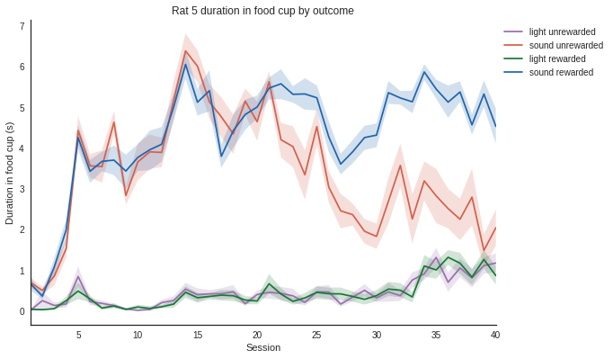
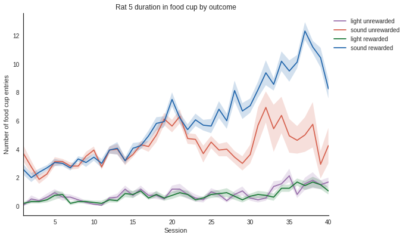

# Tutorial 08 - MedPC behavior¶
# Goals¶
- Implement a behavioral analysis for a Pavlovian task measured in epochs
Compute the duration in food cup for rewarded and unrewarded trials¶
This data is from a Pavlovian biconditional discrimination experiment where two lights (steady, flashing) and two sounds (tone, white noise) were presented for 10 seconds at a time. A trial consisted of one light presentation followed by a 5 second gap, then one sound presentation. There were four different trial types (AX-, AY+, BX+, BY-), such that each individual cue is equally presented with and without food reward. A successful discrimination in this task is when AY+ and BX+ trials have a greater response than AX- and BY- trials.
In [1]:
# Import necessary packages
%matplotlib inline
import os
import numpy as np
import nept
import matplotlib.pyplot as plt
import seaborn as sns
# Define where your data folder is located
data_path = os.path.join(os.path.abspath('.'), 'data')
data_folder = os.path.join(data_path, 'biconditional-tutorial')
In [2]:
# Let's look at Rat 5
rats = ['5']
group1 = ['1', '3', '5', '7']
group2 = ['2', '4', '6', '8']
In [3]:
# Get the sessions. MedPC data is stored in a file that is is in the format !YYYY-MM-DD.
# The a and b indicate morning and afternoon sessions.
sessions = []
for file in sorted(os.listdir(data_folder)):
if file[0] == '!':
sessions.append(os.path.join(data_folder, file))
# Find out the number of sessions
n_sessions = len(sessions)
print('Number of sessions:', n_sessions)
Number of sessions: 40
In [4]:
# Write a function that dictates the maping between the medpc values and the experimental conditions
def assign_medpc_label(data):
"""Assigns events to proper labels.
Parameters
----------
data: dict
Returns
-------
rats_data: dict
With mags, pellets, lights1, lights2, sounds1, sounds2, trial1, trial2, trial3, trial4 as keys.
Each contains nept.Epoch objects
"""
mag_start = np.array(data[1])
mag_end = np.array(data[2])
if len(mag_start) > len(mag_end):
mag_start = np.array(data[1][:-1])
pel_start = np.array(data[3])
pel_end = pel_start + 1
light1_start = np.array(data[4])
light1_end = np.array(data[5])
light2_start = np.array(data[6])
light2_end = np.array(data[7])
sound1_start = np.array(data[8])
sound1_end = np.array(data[9])
sound2_start = np.array(data[10])
sound2_end = np.array(data[11])
rats_data = dict()
rats_data['mags'] = nept.Epoch(mag_start, mag_end-mag_start)
rats_data['pellets'] = nept.Epoch(pel_start, pel_end-pel_start)
rats_data['lights1'] = nept.Epoch(light1_start, light1_end-light1_start)
rats_data['lights2'] = nept.Epoch(light2_start, light2_end-light2_start)
rats_data['sounds1'] = nept.Epoch(sound1_start, sound1_end-sound1_start)
rats_data['sounds2'] = nept.Epoch(sound2_start, sound2_end-sound2_start)
return rats_data
In [5]:
# Set up the data in a dictionary, which is most useful when handling multiple rats
data = dict()
for rat in rats:
data[rat] = nept.Rat(rat, group1, group2)
In [6]:
# Gather the data from all the sessions and add them to the dictionary
for session in sessions:
rats_data = nept.load_medpc(os.path.join(data_folder, session), assign_medpc_label)
for rat in rats:
data[rat].add_session_medpc(**rats_data[rat])
In [7]:
# Make a dataframe from the dictionary
df = nept.combine_rats(data, rats, n_sessions, only_sound=False)
In [8]:
# Take a look at the first few entries of the dataframe.
# Notice we're computing more than only the food cup duration here.
# We can filter it to only the values of interest in our plotting.
df.head()
Out[8]:
| condition | cue | measure | rat | rewarded | session | trial | trial_type | value | |
|---|---|---|---|---|---|---|---|---|---|
| 0 | light 1 | light | durations | 5 | light unrewarded | 1 | 5, 0 | 1 | 0.00 |
| 1 | light 1 | light | numbers | 5 | light unrewarded | 1 | 5, 0 | 1 | 0.00 |
| 2 | light 1 | light | latency | 5 | light unrewarded | 1 | 5, 0 | 1 | 10.00 |
| 3 | light 1 | light | responses | 5 | light unrewarded | 1 | 5, 0 | 1 | 0.00 |
| 4 | sound 1 | sound | durations | 5 | sound unrewarded | 1 | 5, 1 | 1 | 0.12 |
In [9]:
# Plot the duration in food cup behavior
sns.set_style("white")
def plot_measure(measure):
"""Plots the measure overtime for one rat.
Parameters
----------
measure: str
Must be 'durations', 'numbers', 'latency', or 'responses'.
"""
# Filter the dataframe by rat
rat_idx = np.zeros(len(df), dtype=bool)
for rat in rats:
rat_idx = rat_idx | (df['rat'] == rat)
rats_df = df[rat_idx]
# Filter the dataframe by measure, here let's look at the duration of food cup entries
duration = df.loc[df.measure == measure]
# Plot using seaborn since seaborn and pandas (the dataframe) work well together
colours = ["#9970ab", "#d6604d", "#1b7837", "#2166ac"]
ax = sns.tsplot(data=duration, time="session", unit="trial", condition="rewarded", value="value",
err_style="ci_band", ci=68, color=colours)
# Set plotting parameters
legend_dist = 1.
if measure == 'durations':
ax.set(xlabel='Session', ylabel='Duration in food cup (s)')
elif measure == 'numbers':
ax.set(xlabel='Session', ylabel='Number of food cup entries')
elif measure == 'latency':
ax.set(xlabel='Session', ylabel='Latency to first entry (s)')
elif measure == 'responses':
ax.set(xlabel='Session', ylabel='Percent responses')
sns.despine()
plt.tight_layout()
plt.legend(bbox_to_anchor=(legend_dist, 1.))
plt.title('Rat 5 duration in food cup by outcome')
# Show the plot
plt.show()
In [10]:
plot_measure('durations')

In [11]:
plot_measure('numbers')
